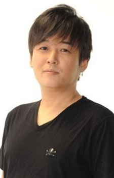
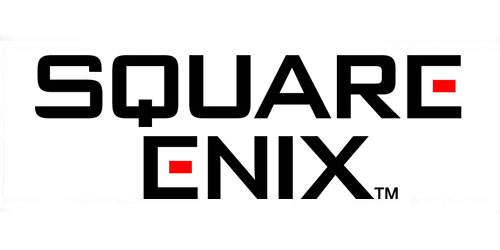

Developers
| Image | Name | Description |
|---|
|  | Tetsuya Nomura | Tetsuya Nomura is a Japanese video game artist, designer and director working for Square Enix. He started collaborating for Square Enix on Final Fantasy VI to later become the led developer of Kingdom Hearts, other Final Fantasy video games and the director of the 2005 film Final Fantasy VII: Advent Children |
|  | Square Enix | Square Enix is famous japanese video game company, best known for its successfull Final Fantasy video game series. Many of the characters from Final Fantasy appear in Kingdom Hearts. Tetsuya Nomura first grand debut was on his collaboration in FF7, which made him one of the most successfull and famoust Square Enix employyes. |
 | Disney | The Walt Disney Company, commonly known as Disney, is an American diversified multinational mass media and entertainment company. |